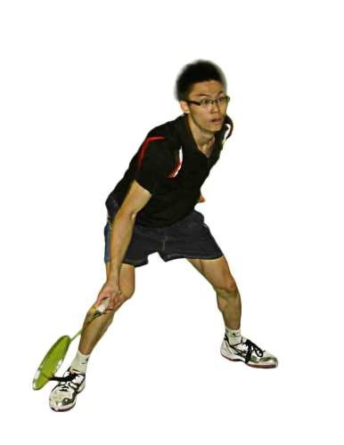
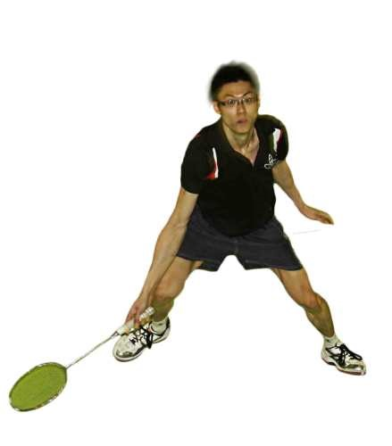

As a player, we should know how to defend. It is one of the most important skills. With strong defence. it’s difficult for your opponent to win a point from you! The harder your opponent tries to penetrate your defence, the higher the chance that he will make an unforced error. There is a quote which is called “Good defence is good offence”.
Here shows you a step by step tutorial on how to defend a badminton smash.
First of all, whenever you lift the shuttle to your opponent (badminton clear or net lift), quickly move to point X as seen in the picture. When defending a smash, position yourself slightly behind your footwork base (slightly behind the center of the court). This gives you some time to ‘catch’ the flight direction of the smash, so that you have enough time to react. When you’re at point X in the picture, adopt the defensive stance.
The picture above shows you a defensive stance when you anticipate a strong smash from your opponent.
a) Bend down as low as you can. The ideal point: bend down until the point when your eyes are on a level plane level with the highest point of the badminton net.
b) Keep your chest wide and rectify your lower back. Twist your knees, abstain from bending your spine.
c) Make beyond any doubt your racket arm (the arm holding the racket) is situated before you. This is to guarantee you're prepared to react rapidly (normally with underarm strokes) when your adversary crushes to you.
d) It's difficult to advise whether your rival will crush to your forehand or strike territory. Along these lines, don't grasp your racket too firmly. This is to change from a forehand to strike hold effortlessly (and the other way around).
e) Besides, holding your racket too firmly limits your wrist activity.

Keep your non-racket arm in action too. This assistance with badminton body balance.
While receiving a smash from your opponent,
i) STAY FOCUS and RELAX
ii) Stand on a FIRM cautious position
iii)Stand on a FIRM cautious position

While on the badminton defensive stance, it is easy to move left or right, as long as you are facing the front (your body facing your opponent). This empowers you to retrieve a smash to the left or right. Defending a badminton smash is somewhat like defend yourself from catching an incoming ball when someone throws on you. Except that you use a racket instead of your hands.
I. The key to guard a strong smash from your opponent is to receive the cautious position.
II. Stand at a position marginally behind the focal point of the court to give yourself more opportunity to see flight direction of your opponent’s smash.
III. Do not scare of the shuttle. When you are afraid of the shuttle, you will normally face slightly to the side. That means that the side of your body will be facing your opponent. If this is the case, you would not be able to cover wide points.
IV. Be fast in moving to this defensive base when you anticipate a strong smash from your opponent. The faster you can move to this point and adopt the badminton defensive stance, you will be more prepared to receive your rival’s smash.
In short, every player should learn this technique to defend themselves from giving a point to your opponent.